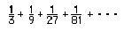
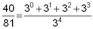
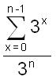
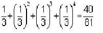
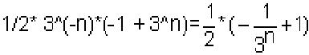
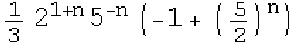

Tim finds a new way to write the nth term of an infinite geometric series
Tim worked on a few infinite series like  with partial sums 1/3, 4/9, 13/27, 40/81, … which goes to ½ . Don asked Tim how to get from 81 to 40 in the 4th partial sum. His first discovery was that if you add the numerator and the denominator of the previous fraction you get 40. That was fine. Was there another way to generalize the nth partial sum? Tim came up with the following, which Don had never seen before:

which he generalized to

… and this works for any of these infinite geometric series with numerator 1. Don asked Tim if he could do a similar thing for a series starting with, say 2/5.
Great job, Tim !
In the meantime, Don did the following in Mathematica for the same series above.
Sum[3^x/3^4,{x,0,4-1}]= 40/81
which is the 4th partial sum with n=4  that Tim did above.
Sum[3^x/3^3,{x,0,3-1}] with n=3, we get 13/27
The nth partial sum
Sum[3^x/3^n,{x,0,n-1}]

The limit of the right side above as n->∞,
equals 1/2; done in Mathematica,Limit[Sum[3^x/3^n,{x,0,n-1}],n->
∞] = 1/2The nth partial sum starting with 2/5 (this took Don quite a while to figure out how to write this sum and then write it as a Mathematica
command):Sum[(2^x*5^(n-x))/5^n,{x,1,n}]
1/3* 2^(1 + n)* 5^(-n)*(-1 + (5/2)^n)
 Don tested this answer by checking the 3rd partial sum which is 78/125.
The 3rd partial sum starting with 2/5 is
Sum[(2^x*5^(3-x))/5^3,{x,1,3}]
78/125 which is what he got above.
The limit of the series starting with 2/5 is 2/3
Limit[Sum[(2^x*5^(n-x))/5^n,{x,1,n}],n->∞] = 2/3